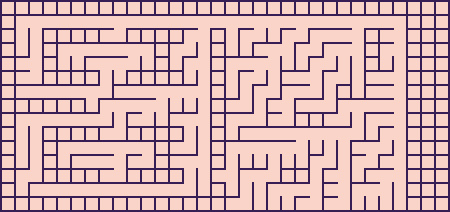
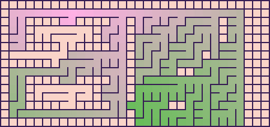
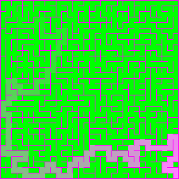

Maze Builder is a C++ maze generation library with a CLI and several example applications for desktop and web targets.
This repository contains:
- Core library: reusable maze data structures, generation algorithms, and output pipelines in include/MazeBuilder
- Examples: There's a CLI example, and an entire game built with SFML in examples/Amazing
Quick start
Generate a 25x25 maze with depth-first algorithm and print to stdout:
mazebuildercli -r 25 -c 25 -a dfs -o stdout
Construct a maze in 3D and generate a Wavefront Object file:
mazebuildercli --rows=25 --columns=25 --seed=42 --algo=binary_tree --output=bt.obj
Write an image:
mazebuildercli -r 25 -c 25 -s 42 -a sidewinder -o 25x25.png
Ask for help:
Generate a masked maze:
mazebuildercli -m example_mask.txt -a binary_tree -o masked_maze.png
Commands are case-sensitive.
What the library provides
The library is organized around a few core concepts:
- cell: an indexed maze cell with links to neighboring cells
- lab: helper operations for linking and unlinking cells
- grid / grid_interface: the main maze topology abstraction
- distance_grid / distances: distance and shortest-path annotation support
- mask / masked_grid: masked mazes driven by text files
- args / configurator: normalized CLI and JSON configuration handling
- runtime_app: the main application facade that parses input and produces output
CLI capabilities
examples/CLI/main.cpp exposes these primary options:
| Option | Description |
| -r, --rows | Maze rows, clamped to 1..100 |
| -c, --columns | Maze columns, clamped to 1..100 |
| -l, --levels | Maze levels, clamped to 1..10 |
| -s, --seed | Random seed |
| -a, --algo | Maze algorithm: binary_tree, sidewinder, dfs, prims |
| -d, --distances | Show distances, optionally with slice notation like [0:10] |
| -m, --mask | Load a text mask file |
| -j, --json | Load arguments from JSON |
| -o, --output | Route output by target name or file extension |
Output formats
The CLI and runtime can emit:
- plain text (stdout or .txt)
- JSON (.json)
- Wavefront object (.obj)
- raster images (.png, .jpg, .jpeg, .bmp)
Output routing is based on --output; file extensions select the renderer automatically.
Text example
+-----+-----+-----+-----+-----+-----+-----+-----+-----+-----+
| | | |
+-----+-----+ + +-----+-----+ + + + +
| | | | | | |
+ +-----+-----+ +-----+-----+ + + +-----+
| | | | | | |
+ + + + + + +-----+ +-----+ +
| | | | | | | |
+ + +-----+-----+ +-----+ +-----+-----+ +
| | | | | |
+ +-----+ + +-----+ +-----+ +-----+-----+
| | | | | |
+ +-----+-----+-----+ + +-----+-----+-----+ +
| | | | |
+-----+-----+-----+ + + + +-----+-----+ +
| | | | | | |
+-----+-----+ + + + + + + +-----+
| | | | | | | | |
+ +-----+-----+ + + +-----+ + + +
| | | |
+-----+-----+-----+-----+-----+-----+-----+-----+-----+-----+
Masked maze example
Masked mazes allow you to create mazes with specific shapes or patterns by using a text file where X represents blocked cells and any other character (typically . or space) represents available cells:
Example mask file:
XXXXXXXXXXXXXXXXXXXXXXXXXXXXXXXX
X............................XXX
X..XXXX..XXXX..X..........X..XXX
X..X.......X...X..........X..XXX
X..X.......X...X..........X..XXX
X..XXXX..XXXX..X.............XXX
X..............X........X....XXX
XXXXXX.........X.............XXX
X..............X.....XX......XXX
X..XXXX..XXXX..X.............XXX
X..X.......X...X.............XXX
X..X.......X...X.............XXX
X..XXXX..XXXX.......XX.......XXX
X..............X.............XXX
XXXXXXXXXXXXXXXX.............XXX
Generate a masked maze:
mazebuildercli -m mask1.txt -o output.jpg --seed=1

With distances:
mazebuildercli -m mask1.txt -d[40:] -o output2.jpg --seed=1

JSON input
The argument parser supports both object-style JSON and array-style JSON files.
Single-object JSON can describe one maze request:
{
"rows": 3,
"columns": 5,
"seed": 2,
"algo": "dfs",
"distances": true
}
Example usage:
mazebuildercli -j in.json -o 3x5_with_distances.json
Array-style JSON files can be used to store multiple configurations. This is covered by the parser tests in tests/test_args_can_parse.cpp.
[
{ "rows": 10, "columns": 10, "algo": "dfs", "output": "maze1.txt" },
{ "rows": 20, "columns": 12, "algo": "sidewinder", "output": "maze2.txt" }
]
C++ API
The simplest integration point is mazes::runtime_app, which accepts a command-like string and returns the generated artifact:
#include <string_view>
std::string_view maze(std::string_view arguments) noexcept
{
if (auto app = mazes::runtime_app::instance())
{
return app->apply(arguments);
}
return {};
}
This same runtime facade is used by the CLI and example applications.
Example applications
| Executable | Location | Purpose |
| mazebuildercli | examples/CLI | Command-line maze generation |
| mazebuilderhttp | examples/Http | Local HTTP server example |
| amazing | examples/Amazing | 2D visualization |
HTTP example
The HTTP example runs a local server with a maze endpoint:
- GET /mazes
- GET /mazes?rows=12&columns=10&algo=dfs
See examples/Http/README.md for quick-start usage.
Build and test
CMake is used for project configuration.
CMake options
| CMake Option | Default | Description |
| MAZE_BUILDER_EXAMPLES | OFF | Build the example applications |
| MAZE_BUILDER_COVERAGE | OFF | Enable coverage flags and add the run_cppcheck target |
| MAZE_BUILDER_TESTS | OFF | Build tests with Catch2 |
| MAZE_BUILDER_DOCS | OFF | Build Doxygen documentation |
| MAZE_BUILDER_MEMCHECK | OFF | Enable Valgrind / Memcheck support |
Build commands
Using presets with Ninja:
cmake ---preset ninja-examples
Build:
cmake --build build-ninja --config Release
By default, both a shared and static library are produced.
| Platform | static lib | shared lib |
| Windows | mazebuildercore_static.lib | mazebuildercore_shared.dll |
| Linux | libmazebuildercore_static.a | libmazebuildercore_shared.so |
| MacOS | libmazebuildercore_static.a | libmazebuildercore_shared.dylib |
Testing
Configure for tests:
cmake -S . -B build-tests -DMAZE_BUILDER_TESTS:BOOL=ON
Run:
ctest --test-dir build-tests --verbose -C Debug
Configure for the Web
Configure the CLI and HTTP examples for the Web with Emscripten:
cmake -S . -B build-web -DCMAKE_TOOLCHAIN_FILE:FILEPATH=${EMSDK_ROOT}/upstream/emscripten/cmake/Modules/Platform/Emscripten.cmake
Scripts
Scripts are documented in scripts/README.md, and mainly fall into these groups:
- Asset conversion: from_png_to_bmp.py, invert_image_colors.py
- Local web serving: secure_http_server.py
- Make an icon: make_icon.rb
- Test the CLI: test_cli.js
make_icon.rb is especially useful as a compact reference implementation: it mirrors concepts such as cells, grids, distances, masked grids, and several maze algorithms.

Other Learning Resources